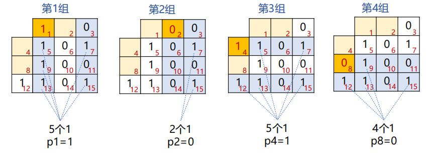
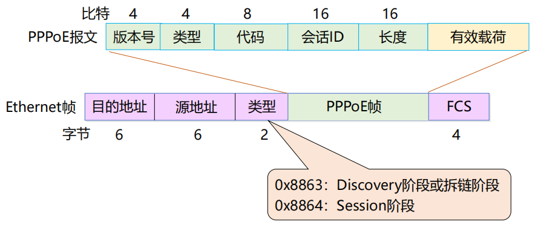

复习碎碎念
约 5967 个字 30 张图片 预计阅读时间 40 分钟
丢一些自己在复习的时候觉得可能有用的东西
一些可能需要的东西
一些中英文对应关系(计网介绍)
网络边缘 Access Layer 或者 Network Edge，但是书上没有找到
网络核心 Network Core，书上好像说Core Network多一点，也可以叫Core Layer
端系统 End System
分组交换(包交换) Packet switching
存储转发 store and forward
网络协议 network protocol
封装 Encapsulation
解封装 De-encapsulation
协议数据单元 PDU Protocol Data Unit
吞吐量 throughput
有效吞吐量 goodput
病毒 virus
蠕虫 Wrom
拒绝服务攻击 DoS Denial-of-Service Attack
僵尸网络 botnet
数据包嗅探 packet sniffing
IP欺骗 IP spoofing
一些中英文对应关系(物理层)
频谱 spectrum
模拟信号 analog signal
数字信号 digital signal
单工 simplex
半双工 half-duplex
全双工 full-duplex
串行传输 Serial transmission
并行传输 Parallel transmission
基带传输 baseband transmission
频带传输 band transmission
调制 modulation
解调 demodulation
调制解调器 MODEN modulation-demodulation
二极管 diode
多径传播 multipath propagation
多径时散 multipath time dispersion
散射传播 scattering propagation
一些中英文对应关系(数据链路层)
无确认无连接服务 Unacknowledged connectionless service
有确认无连接服务 Acknowledged connectionless service
有确认有连接服务 Acknowledged connection-oriented service
帧定界符 Frame Delimiter
前导码 preamble
乱序 out of order
重复 repeatedly delivery
自动重传请求 ARQ Automatic Repeat Request
带有重传的肯定确认 PAR Positive Acknowledgement with Retransmission
一些中英文对应关系(MAC层)
拓扑 topology
混杂模式 promiscuous mode
冲突域 Collision Domain
广播域 Broadcasting Domain
干扰 Interference
一些中英文对应关系(网络层)
一些东西的长度
MAC地址 48位
Introduction
网络分类
个域网 PAN Personal Area Network
局域网 LAN Local Area Nwtwork
城域网 MAN Metropolitan Area Network
广域网 WAN Wide Area Network
Internet与internet

接入网
光纤到户 FTTH
有源光纤网络 AON Active Optical Network
无源光纤网络 PON Passive Optical Network
数字用户线 DSL Digital Subscriber Line
同轴电缆 Cable
混合光纤同轴电缆 HFC
无线局域网 WLAN
物理介质
注意
存储常用字节Byte，K/M/G层级为2^10进制
传输常用比特Bit，K/M/G层级为10^3进制
光纤 Optical fiber：10-100 Gbps以上
双绞线 Twisted Pair：第5类(100 Mbps ~ 1 Gbps)、第6类(10 Gbps)
同轴电缆 Cable：100 Mbps
无线局域网 WIFI：10-100 Mbps，10 m
地面微波 Terrestrial microwave：45 Mbps
网络核心
网络核心的两大功能：路由和转发
电路交换 circuit switching：采用面向连接的方式，需要资源预留(链路带宽资源和交换机的交换能力)
- 电路交换的多路复用：无法应对互联网上的突发流量(Burst)
- 频分多路复用FDM(Frequency Division Multiplexing)
- 时分多路复用TDM(Time Division Multiplexing)
报文交换
存储转发 store and forward
报文交换 message switching
分组交换 packet switching：采用存储转发机制，以分组作为数据传输单元，每个分组的首部都含有地址(目的地址和源地址)等控制信息
协议分层结构
层次栈 a stack of layers
对等实体 peers
接口 interface
网络体系结构 network architecture

服务原语
服务原语 Service Primitives
两种典型服务：面向连接的和无连接的
核心服务原语：(1)连接请求 (2)接收响应 (3)请求数据 (4)应答 (5)请求断开 (6)断开连接
协议是不同节点的同一级实体间使用的
模型
- OSI模型(Open Systems Interconnection)
- 物理层 Physical Layer：传输的是比特流(bit stream)
- 数据链路层 Data Link Layer：传输的是帧(frame)
- 网络层 Network Layer：设备到设备
- 传输层 Transport Layer：进程到进程
- 会话层 Session Layer
- 表示层 Presentation Layer
- 应用层 Application Layer
- TCP/IP参考模型
- 网络接口层 host-to-network Layer
- 互联网层 internet Layer
- 传输层 transport Layer
- 应用层 application Layer
TCP/IP模型
端到端原则：由端系统负责丢失恢复等，简单的网络大大提升了可拓展性
IP分组交换的特点：
- 可在各种底层物理网络上运行(IP over everything)
- 可支持各类上层应用(Everything over IP)
- 每个IP分组携带各自的目的地址，网络核心功能简单(通过路由表转发分组)，适应爆炸性增长
无连接和面向连接
- OSI模型网络层能够支持无连接和面向连接通信
- TCP/IP模型的网络层仅支持无连接通信(IP)
计算机网络度量单位
比特率 bit rate：单位bps, kbos, Mbps, Gbps
带宽 bandwidth：单位bps等
包转发率 PPS Packet Per Second：线速转发(交换机端口在满负载的情况下，对帧进行转发时能够达到该端口线路的最高速度)[在交换机上发送小包更容易实现线速]
时延 Delay
- 传输时延(transmission delay)：数据从节点进入传输媒体所需要的时间，又叫发送时延
- 传播时延(propagation delay)：电磁波在信道中传播一定距离需要的时间
- 处理时延(processing delay)：主机或路由器处理分组(分析首部、提取数据、差错校验、查找路由)所花费的时间
- 排队时延(queueing delay)：分组在路由器输入输出队列中排队等待处理的时间
- 往返时延(RTT Round-Trip Time)：从发送方发出数据，到发送方接收接收方的确认经历的时间
时延带宽积 bandwidth-delay product = 传播时延 × 带宽 (按比特技术)
吞吐量 throughput：单位是 b/s
有效吞吐量 goodput：单位时间内目的地正确接收到有用信息的数目(以bit为单位)
时延抖动 Jitter：变化的时延称为抖动
互联网诞生的标志
1969年ARPANET产生
Physical Layer
物理层基本概念
物理层数据以比特流(bit stream)作为基本单位进行传输
物理层机械特性(Physical characteristics)：接口的物理机构，接线器的形状和尺寸、引线数目和排列、固定和锁定装置等
物理层电气特性(Electrical characteristics)：电路特性、负载要求、传输速率和连接距离、发送信号电平、发送器和接收器的输出阻抗、平衡特性等
物理层功能特性(Functional characteristics)：接口执行的功能、接线器的每一引脚的作用
物理层过程特性(Process characteristics)：指明对于不同功能的各种可能事件的出现顺序

有限带宽信号
信号的信息承载能力与带宽有直接关系，带宽越宽，信息承载能力越强
对于比特率为B bps的信道，发送8位所需的时间为8/B秒，若8位为一个周期T，则一次谐波的频率是：\(f_1=B/8~Hz\)
能通过信道的最高次谐波数目为：\(N=f_c/f_1\)，其中\(f_c\)为截止频率，主要由信道的物理特性决定
结论：及时对于完善的信道，有限的带宽限制了数据的传输速率
The Nyquist theorem 奈奎斯特定理
无噪声有限带宽信道的最大数据传输率公式
最大数据传输率 = \(2Hlog_2V\) bps，其中H表示带宽
data rate = symbol rate * bits per symbol
The Shannon theorem 香农定理
信噪比(信号功率S和噪声功率N之比) = \(10log_{10}S/N\)，单位：分贝
带宽为H赫兹，信噪比为S/N的任意信道的最大数据传输率为：\(Hlog_2(1+S/N)\) bps
信道的最大数据传输速率
一条信息所载荷的信息量等于它所表示的事件发生的概率\(p\)的倒数的对数
当a为2时，I的单位为比特；当a=自然数e时，I的单位为奈特
数据通信系统模型
消息是信息的载体，消息中可能含有信息。信号是消息的载体
数据编码技术
归零编码 RZ：高电平变0表示1，低电平变0表示0
不归零编码 NRZ：高电平表示1，低电平表示0
曼彻斯特码 Manchester：从低到高表示0，从高到低表示1
差分曼彻斯特码 Differential Manchester：每次开始有跳表示0，没有跳表示1
频带传输
幅移键控法(调幅) Amplitude-shift keying(ASK)
频移键控法(调频) Frequency-shift keying(FSK)
相位键控法(调相) Phase-shift keying(PSK)
BPSK和QPSK(4QAM)采用调相实现，16QAM采用调幅加调相实现
导引型传输介质
双绞线 Twisted Pair：通信距离一般在几到几十公里(5类带宽100Mhz，6类250Mhz)
同轴电缆 Cable：基带同轴电缆(10Mbps, 1km)、宽带同轴电缆(300-400MHz, 100km)
光纤 Optical fiber：
- 多模突变光纤(multimode mutation fiber)[带宽较窄，使用于小容量短距离通信]
- 多模渐变光纤(multimode graded fiber)[带宽较宽，使用于中容量中距离通信]
- 单模光纤(single-mode fiber)[带宽极宽，使用于大容量远距离通信]
非导引型传输介质
短波传输short-wave transmission(无线电波 radio wave)：沿地表传输数百千米，靠大气层中的电离层反射传播数千上万千米
微波 microwave：多路复用、射频工作和中继接力是地面微波传输的三个最基本的工作特点。两通信站之间的距离一般在40~60km。
大气激光通信 atomspheric laser communication 可传输语音、数据、图像等信息
多路复用
TDM信号(时分复用信号)也成为等时(isochronous)信号
统计时分复用(STDM, statistical time division multiplexing)指动态地按需分配共用信道地时隙
波分复用(WDM, Wavelength Division Multiplexing)是利用多个激光器在单条光纤上同时发送多束不同波长激光的技术
码分复用(CDMA, Code Division Mulyiple Access)是指利用码序列相关性实现的多址通信
- 码片序列 Chip sequence
- 码片 Chip
码分复用使用举例
- 共有四个站进行码分多址CDMA通信。四个站的码片分别为
- A: (-1 -1 -1 +1 +1 -1 +1 +1)
- B: (-1 -1 +1 -1 +1 +1 +1 -1)
- C: (-1 +1 -1 +1 +1 +1 -1 -1)
- D: (-1 +1 -1 -1 -1 -1 +1 -1)
- 问题
- 现收到这样的码片序列：M=(-1 +1 -3 +1 -1 -3 +1 +1)
- 问哪个站发送数据了？
- 发送数据的站发送的1还是0？
- 求解
- A*M=1/8*(1-1+3+1-1+3+1+1)=1因此A发送了1
- 同理，B*M=-1，C*M=0，D*M=1
- 即A、D发送了1，B发送了0，C未发数据
码片序列实现了扩频：直接序列扩频DSSS(Direct Sequence Spread Spectrum)和跳频扩频FHSS(Fequency Hopping Spread Spectrum)
正交频分复用(OFDM, Orthohonal Frequency Division Multiplexing)：将信道分成若干正交子信道，将高速数据信号转化成并行的低速子数据流，调制到在每个子信道上进行传输 - 4G、5G、WIFI 5都采用了OFDM技术
Data Link Layer
数据链路层分为逻辑链路控制(LLC)和介质访问控制(MAC)，其中LLC是局域网的数据链路层
数据链路层的数据以帧(frame)为单位进行传输：将比特流划分成帧的主要目的是为了检测和纠正物理层在比特传输中可能出现的错误
数据链路层提供的服务包括差错控制(Error Control)和流量控制(Flow Control)
数据链路层提供的服务
- 无确认无连接服务：适用于误码率低的可靠信道或者需要实时通信的场景(以太网)
- 有确认无连接的服务：适用于不可靠的信道[无线信道](802.11，也就是WiFi)
- 有确认有连接的服务：适用于长延迟的不可靠信道
分组(packet)和成帧(frame)的关系
packet是网络层传输的基本单元，frame是数据链路层传输的基本单元，网络层的packet是数据链路层frame的有效载荷部分，除了有效载荷，还要在头部添加头标，尾部添加尾标
帧定界符(frame delimiter)
- 字节计数法(Byte count)
每一个帧的开始的一个字节是一个数字，表示这一个帧中包含有多少个字符(包含自己)。这种情况下，一旦有一个计数字节发生了错误，那么就会破坏帧的边界，导致一连串帧的错误。
- 带字节填充的定界符法(Flag bytes with byte stuffing)
定界符(FLAG)是特殊的字节，比如0x7E，用于区分前后两个不同的帧。
FLAG + 头标 + 有效载荷 + 尾标 + FLAG：从头标到尾标表示一个帧
添加了转义字节，避免了在有效载荷部分出现于定界符相同的字节的问题
如果有效载荷中出现了定界符或者是转义字节，那么就在这个字节的前面加上一个转义字节。接收方收到ESC，则后一个字节无条件称为有效载荷，不进行检查。接收方收到FLAG，认为是帧的边界。
- 带比特填充的定界符法(Flag bits with bit stuffing)
定界符：两个0比特之间，连续6个1比特
若在有效载荷中出现连续5个1比特，则直接插入1个0比特
接受方收到数据后，如果出现连续的5个1比特，下一个比特为0，则认为是有效载荷并且丢弃0比特；下一个比特为1，认为是定界符，一帧结束。
- 物理层编码违例(Physical layer coding violations)
核心思想：选择的定界符不会在数据部分出现，也就是说，选择数据部分的非法字符作为定界符。
差错控制
信道噪声导致数据传输问题：差错(incorrect)、丢失(lost)、乱序(out of order)、重复(repeatedly delivery)
解决方案：差错检测与纠正、确认重传(包括接收方校验数据、使用定时器以及顺序号)
流量控制
在链路层需要考虑接收方的处理速率(接收方缓冲区的大小是有限的)
解决方案：基于反馈(feedback-base)的流量控制和基于速率(rate-based)的流量控制
检错码(error-detecting code)
主要用在高可靠、误码率较低的信道上，比如光纤链路
纠错码(error-correcting code)
主要用于发生错误比较频繁的信道上，比如无线链路
使用纠错码的技术通常称为前向纠错(FEC, Forward Error Correction)
码字与码率
码字(code word)：一个包含m个数据位和r个校验位的n位单元，描述为(n, m)码，n=m+r
码率(code rate)：码字中不含冗余部分所占的比例，可以用m/n表示
海明距离(Hamming distance)
两个码字的海明距离：两个码字之间不同对应比特的数目
一种编码方案的海明距离：改编码方案中任意两个合法码字的最小海明距离
为了发现 d 比特的错误，需要最小的海明距离为 d+1
为了纠正 d 比特的错误，需要最小的海明距离为 2d+1
典型检错码
- 奇偶校验码(Parity Check)
增加一位校验位(保证1的个数为奇数/偶数个)，可以检查奇数位错误，但是不能纠正
- 校验和(Checksum)：主要用于TCP/IP体系中的网络层和传输层
溢出的1需要重新加到最后一位上
记得计算完成之后要取反
- 循环冗余校验(Cyclic Redundancy Check, CRC)：数据链路层广泛使用的校验方法
设原始数据D为k位二进制模式，如果要产生n位CRC校验码，需要事先选定一个n+1位二进制位模式G(最高位为1)。
然后将原始数据D乘以\(2^n\)(也就是在D后面添加n个0)，产生k+n位二进制模式，用G对该位模式做模2除(异或运算)，得到余数R(不足n位前面用0补齐)即为CRC校验码
最后需要将生成的校验码添加到原数据的尾部

四个国际标准生成多项式(这个考试总不能不给吧×)
- CRC-12 = \(x^{12}+x^{11}+x^3+x^2+x+1\)
- CRC-16 = \(x^{16}+x^{15}+x^2+1\)
- CRC-CCITT = \(x^{16}+x^{12}+x^5+1\)
- CRC-32 = \(x^{32}+x^{26}+x^{23}+x^{22}+x^{16}+x^{12}+x^{11}+x^{10}+x^8+x^7+x^5+x^4+x^2+x+1\)
以太网、无线局域网使用CRC-32生成多项式
CRC可以检测出所有单比特的错误
CRC中带r个检验位的多项式编码可以检测到多有长度小于或等于r的突发性错误
纠错码设计
要求：m个信息位，r个校验位，纠正单比特错，需要满足条件
典型纠错码 - 海明码 Hamming Code
以奇偶校验码为基础(默认为偶校验码)
检验位：2的幂次方位(记作p1, p2, p4, p8)

错误的定位，只需要把错误错误的校验位的下标相加，就是发生错误的下标编号(比如如果p1，p2，p4发生错误，那么就表示第7位出错)，这里的位数是加上校验位的情况。
具体实现过程：每个码字到来之前，接收方计数器清零，然后接收方对每个校验位进行检查，如果校验位Pk出错，计数器加k，最后如果计数器为0，表示没有错误，否则就是计数器结果位出错。
使用海明码纠正突发错误
采用k个码字(n=m+r)组成k×n矩阵，按列发送，接收方恢复成k×n矩阵
kr个校验位，km个数据位，可以纠正最多k个突发性连续比特错
典型纠错码 Convolutional Code
计算方式：从起点开始时考虑所有的情况，并且累加每条路径上每次输出结果的海明长度的值，当后续有不同路径通往同一个节点时，保留累计海明距离更小的那一条路径。
停等协议(stop-and-wait)
发送方发送一帧后暂停，等待确认(Acknowledgement)到达后发送下一帧。接收方完成接收后，回复确认接收。
发送方添加计时器(timer)，用来计时发送的帧是否已经超时而需要进行重传。
序号(SEQ：sequence number)用来判断接收方收到的帧是第一次发来的新帧还是需要被丢弃的重复帧(ack包丢失导致发送发重传的重复帧)，在停等协议中，序号只需要1个bit即可。
效率的评估
F = frame size (bits)
R = channel capacity (Bandwidth in bits/second)
I = propagation delay + processor service time (second)
每帧发送事件(Time ti transmit a signal frame) = F/R
总延迟(Total Delay) = D = 2I
停等协议的发送工作事件是F/R，空闲时间是D
当F<R*D时：信道利用率(line utilization)=F/(F+R*D) < 50%
停等协议的问题：只能有一个没有被确认的帧在发送中
长肥网络(LFN, Long Fat Network)：如果一个网络的带宽-延迟乘积(bandwidth-delay product)很明显的大于\(10^5\)bits(~12kB)，则可以被认为时长肥网络
停等协议的信道利用率很低：传播时延较长。可以通过使用更大的帧来提高效率，但是使用更大的帧会提高在传输中出错的概率，进而导致更多的重传。
滑动窗口协议 Sliding Window Protocol
窗口机制：发送方和接收方都具有一定容量的缓冲区(即窗口)，发送端在收到确认之前可以发送多个帧
目的：对可以连续发出的最多帧数(已发出但未收到确认的帧)作限制
序号使用：循环重复使用有限的帧序号
发送窗口：其大小记作\(W_T\)，表示发送方在收到对方确认的信息之前，可以连续发出的最多数据帧数
接收窗口：其大小记作\(W_R\)，表示接收方可以连续接收的最多数据帧数
累计确认：不必对收到的分组逐个发送确认，而是对按序到达的最后一个分组发送确认
回退N协议 GBN Go Back N
出错全部重发：当接收端收到一个出错帧或乱序帧时，丢弃所有的后继帧，并且不为这些帧发送确认；发送端超时后，重传所有未被确认的帧。
适用于接收窗口为1的情况，即只能按顺序接收帧的情况
优点：连续发送提高了信道利用率
缺点：按序接收，出错后即便有正确帧到达也丢弃重传
基本原理：当发送方发送了N个帧后，若发现该N帧的前一个帧在计时器超时后仍未返回其确认信息，则该帧被判为出错或丢失，此时发送方就重新发送出错帧及其后的N帧。
滑动窗口长度：若帧序号为n位，接收窗口\(W_R\)=1，发送窗口\(W_T\le 2^n-1\)
选择重传协议 SR Selective Repeat Protocol
设计思想：若发送方发出连续的若干帧后，收到对其中某一帧的否认帧，或某一帧的定时器超时，则只重传该出错帧或计时器超时的数据帧
适用于接收窗口大于1的情况，即暂存接收窗口中序号在出错帧之后的数据帧
优点：避免重传已正确传送的帧
缺点：在接收端需要占用一定容量的缓存
基本原理：(1)在发送过程中，如果一个数据帧计时器超时，就认为该帧丢失或者被破坏；接收端只把出错的的帧丢弃，其后面的数据帧保存在缓存中，并向发送端回复NAK；发送端接收到NAK时，只重传出错的帧。 (2)如果落在窗口内的帧从未接受过，那么存储起来，等比它序列号小的所有帧都正确接收后，按次序交付给网络层。 (3)接收端收到的数据包的顺序可能和发送的数据包顺序不一样，因此在数据包里必须含有顺序号来帮助接收端进行排序。
滑动窗口长度：发送窗口的尺寸\(W_T\le 2^{n-1}\)，发送窗口应等于或小于序号空间的一半。接收窗口尺寸\(W_R\le 2^{n-1}\)
GBN只设置一个定时器，每次收到ACK就会将定时器刷新。SR给每一个PDU(Protocol Data unit)设置一个定时器，定时器超时时只会重传这一个帧。
SR的确认策略可以采用立即确认，也可以采用延迟确认(发送方和接收方协调一致就可以，虽然我感觉更应该用立即确认×)
PPP协议实现的功能
- 利用帧定界符封装成帧
- 采用填充技术实现透明数据传输：字节填充、零比特填充
- 帧的差错检测
- 实时检测链路工作状态
- 设置链路最大传输单元(MTU Maximum Trasimission Unit)
- 网络层地址协商机制和数据压缩协商机制
PPP协议未实现的功能
- 帧数据的纠错功能：数据链路层的PPP协议只提供检错，不提供纠错
- 流量控制功能：PPP协议未实现点到点的流量控制
- 可靠传输：PPP协议为不可靠传输
- 多点连接功能：PPP协议只支持点对点的链路通信
- 单工和半双工链路：PPP协议仅支持全双工链路
PPP协议的构成
封装(encapsulation)：同一链路上支持不同的网络层协议；PPP即支持异步链路(无奇偶校验的8比特数据)，也支持面向比特的同步链路(使用硬件完成比特填充)[在SONET/SDH链路时]；IP数据包在PPP帧中是其信息部分，其长度受到MTU的限制。
链路控制协议LCP(Link Control Protocol)：用来建立、配置和测试数据链路的链路控制协议，通信双方可协商一些选项
网络控制协议NCP(Network Control Protocol)：其中每个协议支持一种不同的网络层协议
PPP协议的帧格式
其中FCS为CRC校验和部分
字节填充：标志字段(0x7E)，转义字符(0x7D)
PPP协议的工作状态及转换
- 在点对点链路上建立通信，通信双方通过LCP报文进行配置和测试链路
- 对等实体进行身份认证（可选）
- PPP协议必须发送NCP报文来选择和配置一个或多个网络层协议
- 双方网络层协议可以通过PPP链路发送数据报，并持续通信
- LCP或NCP数据报显式关闭链路，或者异常事件导致关闭链路

PPPoE概述
Ethernet缺点：安全性较低、不宜管理；使用广播信道，造成了安全性较低，无认证功能
PPP优点：安全性高(点对点信道，提供认证机制)，提供良好的访问控制和计费功能
PPPoE提供在以太网链路上的PPP连接，使用Client/Server模型，服务器通常是接入服务器
PPPoE组网方式
- (方式1)设备之间建立 PPP 会话，所有主机通过同一个 PPP 会话传送数据，主机上不用安装 PPPoE 客户端拨号软件，一般是一个机构共用一个账号
- (方式2)PPP 会话建立在 主机和运营商的路由器之间，为每一个主机建立一个 PPP 会话，每个主机都是PPPoE Client，每个主机有一个帐号，方便运营商对用户进行计费和控制。主机上需要安装PPPoE客户端软件。
PPPoE报文格式及Ethernet帧封装

PPPoE工作过程
- Discovery阶段：获取对方以太网地址，确定PPPoE会话ID
- Session阶段：PPP协商阶段、PPP报数据传输
- Terminate阶段：会话建立以后的任意时刻，发送报文结束
MAC
多点访问信道
多点访问信道：多用户共享一根信道
如图是以太网的典型拓扑，早期星型拓扑是集线器，现在几乎都是交换机，当使用集线器或交换机工作在半双工模式的时候，它的逻辑拓扑是总线式的，信道是共享的
常见的局域网拓扑
总线拓扑(Bus Topology)、星型拓扑(Star Topology)、环形拓扑(Ring Topology)
共同点：共享一根信道
介质访问控制
介质访问控制(分配信道)：在多路访问信道上确定下一个使用者
静态分配方法：TDM(Time Division Multiplexing)、FDM(Frequency Division Multiplexing)
静态分配的排队论分析
M/M/1排队系统模型
第一个M(顾客到达时间间隔分布)：帧到达时间间隔服从指数分布，平均到达率(输入率)为\(\lambda\)帧/秒
第二个M(服务时间分布)：帧长度服从指数分布，平均长度\(1/\mu\)位/帧。信道容量位C位/秒，则信道服务率为\(\mu C\) 帧/秒
1(并列服务台个数)
单信道平均延迟时间T(顾客在服务系统中的逗留时间)为：\(T=\frac{1}{\mu C-\lambda}\)
信道N等分后每个子信道的平均延迟时间：\(T_{FDM}=NT\)
多路访问协议
- 随机访问协议：冲突不可避免
- ALOHA
- 纯ALOHA
- 分隙ALOHA
- CSMA
- p-持续CSMA
- 1-持续CSMA/CD
- 非持续
- ALOHA
- 受控访问协议：克服了冲突
- 位图协议
- 二进制倒计数
- 令牌
- 有限竞争协议：上述二者结合
- 自适应树
纯ALOHA协议
想发就发，随时可能冲突，冲突的帧被完全破坏，破坏了的帧要重传。
-
概率：
(1) 一个帧时内信道中产生k个帧，服从泊松分布：\(Pr[k]=G^ke^{-G}/k!\)
(2) 一个帧时内信道中产生0个帧：\(Pr[k=0]=e^{-G}\) -
性能分析：
(1) 吞吐量(Throughout) S 表示在发送时间T内成功发送的平均帧数，显然满足 0<S<1
(2) 运载负载(Carried load) G 又称网络负载，表示时间T内所有通信站总共发送的帧平均值(包括原发和重发的分组)，显然满足 G≥S
(3) \(P_0\)：\(P_0\)是一帧发送成功的概率，就是发送成功的分组在已发送分组的总数中所占的比例，因而满足\(S=G\times P_0\)
纯ALOHA协议的冲突危险期为2D，因而生成帧均值为2G，不遭受冲突的概率为\(P_0=e^{-2G}\)
纯ALOHA信道的利用率最高为18.4%
分隙ALOHA(Slotted ALOHA)
分隙ALOHA是把时间分成时隙，时隙的长度对应一帧的传输时间，帧的发送必须在时隙的起点，冲突也只发生在时隙的起点。因而分隙ALOHA的冲突危险期大小为D。
分隙ALOHA的最大吞吐率为0.368，是纯ALOHA的两倍。
载波侦听多路访问协议
CSMA：Carrier Sense Mulyiple Access。特点是先听后发。
非持续式CSMA
特点：(1)经侦听，如果介质空闲，就开始发送 (2)如果介质忙，则等待一个随机分布的时间，然后重复上一个步骤
好处：等待一个随机时间可以减少再次碰撞冲突的可能性
缺点：等待时间内介质上如果没有数据传送，这段时间是浪费的
1-持续式CSMA
特点：(1)经侦听，如介质空闲，则发送 (2)如介质忙，持续侦听，一旦空闲立即发送 (3)如果发生冲突，等待一个随机分布的时间再重复步骤(1)
好处：持续式的延迟时间要少于非持续式
主要问题：如果两个以上的站等待发送，一旦介质空闲就一定会发生冲突
p-持续式CSMA
特点：(1)经侦听，如介质空闲，那么以p的的概率发送，以(1-p)的概率延迟一个时间单元发送 (2)如介质忙，持续侦听，一旦空闲重复步骤(1) (3)如果已经发送，那么就推迟一个时间单元再重复步骤(1)
CSMA/CD (1-持续)
CSMA with Collision Detection
原理：先发后听，边发边听
过程：(1)经侦听，如介质空闲，则发送 (2)如介质忙，持续侦听，一旦空闲立即发送 (3)如果发生冲突，等待一个随机分布的时间再重复步骤(1)
一旦侦听到发送出去的信号产生了冲突，就发送Jam(强化)信号。通过比较发出的信号与收到的信号是否一致来进行冲突的侦听。
要求发送帧的时间不能太短，需要至少一个冲突窗口的时间，也就是2D
感觉这一块最重要的地方是发送帧的长度的考察，也就是给你一点条件，让你算发送帧的最短长度需要是多少才能够不发生冲突。
CSMA/CD概念模型
- 传输周期：一个站点使用信道，其他站点禁止使用信道
- 竞争周期：所有站点都有权尝试使用信道，争用时间槽
- 空闲周期：所有站点都不使用信道
位图协议(预留协议) Bitmap Protocol
- 竞争期：在自己的石槽内发送竞争比特(包括举手示意和资源预留)
- 传输期：按序发送(明确的使用权，避免了冲突)
信道利用率分析：假设有r个用户(r近似于一个发送周期内平均需要发送一帧的用户个数)，需要N个时隙，每帧d比特，那么信道的利用率为
- 在低负载的情况下，r=1，那么信道利用率为\(d/(d+N)\)
- 在高负载的情况下，r=N，那么信道利用率为\(d/(d+1)\)，接近100%
缺点：位图协议无法考虑优先级
令牌传递(Token Passing)
工作方式：发送工作站去抓取令牌，获得发送权
发送的帧需要目的站或发送站将其从共享信道上去除，防止无限循环
缺点：令牌的维护需要一定的代价
二进制倒计数协议 Binary Exponential Backoff Protocol
每一个站点都有一个序号，并且序号的长度相同。在竞争期的时候，需要发送数据的站点从高序号到低序号排队，高者得到发送权。
特点：高序号站点优先(可能会导致饥饿问题)
信道利用率：N个站的二进制编码所需位数是\(log_2N\)位，因而信道的利用率为\(d/(d+log_2N)\)
如果每个帧的帧头为发送地址，即竞争的同时也在发送，则效率为100%
自适应树搜索协议(Adaptive Tree Walk Protocol)
在一次成功传输后的第一个竞争时隙，所有站点同时竞争。如果只有一个站点申请，则获得信道。否则在下一竞争时隙，有一半站点参与竞争(递归)，下一时隙由另一半站点参与竞争。(所有站点构成一棵完全二叉树)[具体的使用查看第四次作业的第三题]
以太网的一些东西
以太网名称对应
快速以太网 Fast Ethernet 指百兆以太网(100Mbps)
经典以太网物理层
最高速率10Mbps，使用曼彻斯特编码，使用同轴电缆和中继器连接。
任意两个收发器之间距离不得超过2.5km，且任意两个收发器之间经过的中继器不能超过4个以保证MAC协议正常工作。
经典以太网MAC子层
主机运行CSMA/CD协议
黄色部分为前导码，前7个字节为前同步码(Preamble)，最后一个字节是帧开始定界符(SFD)。只用来保证接收电路在帧的目的地址字段到达前保持正常的接收状态，这8个字节不需要保留，也不进入帧头长度。
粉色部分为以太网MAC帧内容，其中数据部分为IP数据报内容。
MAC地址举例
单播(unicast)：5C-26-0A-7E-4E-4C
广播(broadcast)：FF-FF-FF-FF-FF-FF
组播(multicast)：01-00-5E-00-00-00
前三个字节为OUI(Organizationally Unique Identifier)，是组织唯一标识符
后三个字节为NIC(Network Interface Controller) Specific，是网络接口控制器
源地址后面的两个字节，Ethernet V2将其视为上一层的协议类型(IPv4[0x0800]、ARP[0x0806]、PPPoE[0x8864])，IEEE802.3将其视为数据长度。(一般来说，网卡收到帧后，根据这个字段的大小来判断是Ethernet V2帧还是IEEE802.3帧，如果数字比较大就是Ethernet V2帧，反之就是IEEE802.3帧)
数据字段长度为46~1500字节，也就是说，最小帧长为46+18=64字节，最大帧长为1500+18=1518字节。如果数据字段不足46字节，需要填充整数字节(Padding)至46字节(全部填充0)，以保证以太网MACZ帧不小于64字节。(以太网中凡长度小于64字节的帧都是由于冲突而异常中止的无效帧)
校验和(FCS Frame Check Sequence)使用CRC32计算除了校验和以外的其他字段(从目的地址开始)。对于检查出的无效MAC帧就简单地丢弃，以太网不负责重传丢弃地帧。
二进制指数后退(Binary exponential backoff)的CSMA/CD
确定基本退避时间槽，其长度为以太介质上往返传播时间(\(2\tau\))，以太网中设为512比特时间。
定义重传次数k，k≤10，即 k=min[重传次数, 10]。
从整数集合[0, 1, ..., (\(2^k\)-1)]中随机取出一个数，记为r。重传所需的时延就是r倍的时间槽\(2\tau\)。当重传达16次仍不能成功时即丢弃该帧，并向高层报告。
性能分析：在给定帧长的情况下，增加带宽或距离会降低网络效率。同时电缆的长度越长，信道的效率也会越低。
交换式以太网 Switched Ethernet
使用集线器(Hub)组建以太网。Hub所有端口内部都是连通的，使用同一根总线。集线器是物理层设备。
使用Hub拓展以太网并不能够增加容量，并且使用集线器组成更大的局域网都在一个冲突域中。
同一个冲突域中的数据不能够同时发送
交换式以太网的核心是交换机(Switch)，工作在数据链路层，检查MAC帧的目的地址对收到的帧进行转发。
Switch与Hub相比，内部通过告诉背板连接所有端口，并且每个端口都有独立的冲突域，在全双工模式下端口可以同时收发，不需要CSMA/CD，并且可以实现并行传输
快速以太网(fast ethernet)
带宽从10Mbps增加到100Mbps，比特时间从100ns降低到10ns，电缆的最大长度降低到十分之一。
千兆以太网 gigabit Ethernet
带宽增加到1000Mbps(1Gbps)，可以使用全双工(不需要使用CSMA/CD)和半双工(需要使用CSMA/CD，并且增加载波扩充和帧突发)两种方式工作
万兆以太网 10-Gigabit Ethernet
常记为10GE, 10GbE或10 GigE，带宽增加到10Gbps。只支持全双工模式，不再使用CSMA/CD。重点是超高速的物理层。
40G-100G以太网 40 Gigabit Ethernet and 100 Gigabit Ethernet
带宽增加到40Gbps和100Gbps，同样只支持全双工模式。联网设备可以通过可插拔模块支持不同的物理层类型。
物理层设备扩充网络
Hub集线器可以在一定程度上实现网络的扩充，但是集线器的使用会扩大冲突域，导致性能的降低并且具有安全隐患。
数据链路层设备扩充网络
可以使用网桥(Bridge)或者交换机(Switch)来实现，可以实现冲突域的分隔。通过网桥控制交换机上数据的传输：当交换机看到包的来源和目的接口不一致时会进行传输，否则会直接丢弃。
Hub连接的还是一个冲突域，但是Bridge连接的不是一个冲突域
MAC地址表的构建
- 逆向学习源地址(记录端口与MAC地址的对应信息，主机向外发送数据时，其MAC地址就会被学习)，并且记录帧到达的时间，设定老化时间(默认300s)，当老化时间到期时，该表项就会从地址表中清除。(如果发现MAC地址已经在地址表中，那么就更新该表项的帧到达时间并且重置老化时间)
数据链路层交换原理
- Forwarding 转发：当MAC地址表完善时，网桥就会找到MAC地址对应的端口并且将数据帧转发出去
- Filtering 过滤：如果需要转发的端口等于数据帧到来的端口，那么就直接丢弃
- Flooding 泛洪：当MAC地址表不完善时，也就是此时找不到MAC地址的端口匹配项，那么就会从除了接收端口的所有端口发送出去，会浪费网络资源并且存在安全隐患(泛洪就相当于产生了一个巨大的冲突域)[除了在地址表中找不到匹配项的情况需要泛洪之外，另一种需要泛洪的情况是这个数据帧是广播帧，也就是目的地址为FF-FF-FF-FF-FF-FF]
链路层交换机
POE(Power Over Ethernet)交换机：无需电源(受电端)、无需专门布线
传统LAN分段中交换机端口通常和集线器连接，集线器再和主机连接，可以让冲突域更小。现代LAN分段中交换机直接和主机连接，创建无冲突域。
- 对称交换：出和入的带宽相同
- 非对称交换：出和入的带宽不同(交换机上不同端口的速率可能不同)
链路层交换机不同交换模式(从转发时机的角度)
- 存储转发模式(Store and Forward)：转发前必须接收整个帧、执行CRC校验，不转发出错帧并且支持非对称交换，但是延迟较大
- 直通模式(Cut-through)：一旦接受到帧的目的地址，就开始转发。延迟非常小，可以边入边出。但是可能转发错误帧，并且不支持非对称交换
- 无碎片模式(Fragment-free)：接受到帧的前64个字节就开始转发。这种方式过滤了冲突碎片，并且延迟和转发错帧介于存储转发和直通交换之间。但是仍可能转发错误帧，并且不支持非对称交换。
实际中使用最多的是无碎片交换
生成树协议STP(Spanning Tree Protocol)
- 物理环路引发的问题1 - 广播风暴(Broadcast Storm)：交换机或网桥在物理环路上无休止地泛洪广播流量，无限循环，迅速消耗网络资源
- 物理环路引发的问题2 - 重复帧：发送到环路中的单播帧可能导致目的设备收到重复的帧
- 物理环路引发的问题3 - MAC地址表不稳定：当一个帧的多个副本到达不同端口时，交换机会不断修改同一MAC地址对应的端口
如何得到一棵无环的生成树：(1)参与的交换机或网桥收发桥协议数据单元(BPDU)，选举产生根桥、根端口、指定端口，从而形成生成树
桥协议数据单元BPDY包含的信息：
(1) 根桥ID(Root ID)：桥ID共8字节，由2字节的优先级和6字节的MAC地址组成
(2) 根路径开销(Root Path Cost)：到根桥的最小路径开销
(3) 指定桥ID(Designated Bridge ID)：生成和转发BPDU的桥ID
(4) 指定端口ID(Designated Port ID)：发送BPDU的端口ID
生成树的选举过程1：选举根桥
同一广播域中的所有交换机均参与选举，桥ID最小的交换机或者网桥成为生成树的根。一个广播域内只能有一个根桥，并且根桥的多有端口都处在转发状态。
桥ID大小的比较
- 首先比较优先级，优先级数值最小的交换机胜出成为根桥
- 如果优先级数值相等，MAC地址最小的交换机成为根桥
生成树的选举过程2：为每个非根桥选出一个根端口
对于每个非根桥，通过比较其每个端口到根桥的根路径开销，选出根端口，如果多个端口的根路径开销相同，则端口ID最小的端口被选座根端口。
非根桥只能有一个根端口，根端口处于转发状态。
端口(链路)开销值由IEEE定义，也可以手动配置改变
生成树的选举过程3：为每个网段确定一个指定端口
对于每一个网段，选择具有最小根路径开销的端口作为这个网段的指定端口(如果连接一个网段的端口的根路径开销相同，就选择桥ID较小的设备端口作为指定端口)。指定端口处于转发状态，负责该网段的数据转发。如果连接网段的既不是指定端口又不是根端口的端口，就会阻塞。
根桥的所有连接端口都是指定端口
802.1D标准给出的五种端口状态
生成树协议端口状态的迁移
端口角色确定为指定端口或根端口后，从Blocking状态经Listening和Learning才能到Forwarding状态，中间需要两个Forwarding Delay时间。
默认的Forwarding Delay时间是15秒，能保证当网络的拓扑发生改变时，新的配置信息能够传遍整个网络，从而避免由于网络为收敛而造成临时环路。
当由交换机或者网桥或链路故障导致网络拓扑改变时，需要重新构成生成树。此时如果一个端口从Blocking状态变成Forwarding状态，至少需要30秒，也就是说，网络的联通性至少要30秒之后才能恢复。
快速生成树协议(RSTP, Rapid Spanning Tree Protocol)
RSPT是STP的优化版，具有更快的计算生成树的速度。
端口被选为根端口后，STP会有2倍的Forwarding Delay的时间延迟，但是RSTP在存在阻塞的备份根端口情况下，仅有数毫秒延迟。
端口被选为指定端口后，STP也会有2倍的Forwarding Delay的时间延迟。但是在RSTP中，如果指定端口是非边缘端口，延迟取决因素较多；如果指定端口是边缘端口，指定端口可以直接进入转发状态，没有延迟。
边缘端口是指哪些直接和终端设备相连，不再连接任何交换机的端口。不能被阻塞！
虚拟局域网(广播域)
广播域(Broadcasting Domain)是广播帧能够到达的范围。缺省情况下，交换机所有端口同属于一个广播域，无法隔离广播域。
当广播帧在广播域中传输，会占用资源，降低性能，并且存在安全隐患。
一般的交换机(不支持虚拟局域网)仅能够隔离冲突域，不能够隔离广播域。支持虚拟局域网的交换机可以通过划分VLAN来分隔广播域。每个VLAN都是一个独立的广播域。
通过路由器或三层交换机进行VLAN间路由，实现VLAN间通信。
不同VLAN的成员不能再数据链路层通信，但是可以在网络层通信。
VLAN类型
- 基于端口的VLAN(最常见)：通过交换机的端口来指定不同的VLAN
- 基于MAC地址的VLAN：通过不同的MAC地址来指定不同的VLAN
- 基于协议的VLAN：使用不同协议的通信处于不同的VLAN中
- 基于子网的VLAN：根据子网IP来区分不同的VLAN
不同VLAN的数据帧的区分
数据帧中携带VLAN标记，这个标记由交换机添加和删除，对于终端站点来说是透明的。
帧标记标准：IEEE802.1Q
- 带VLAN标记的帧称为标记帧(Tagged Frame)
- 不携带VLAN标记的普通以太网帧称为无标记帧(Untagged Frame)
Access链路类型端口
一般用于连接用户设备，采用的是基于端口的VLAN划分，Access端口只能加入一个VLAN。一旦Access端口加入了特定的VLAN，连接在该端口的设备被视为属于该VLAN。
Trunk链路类型端口与Trunk链路
Trunk端口一般用于交换机之间连接，干道链路允许多个VLAN的流量通过。
VLAN的优点
- 有效控制广播域范围：广播流量被限制在一个VLAN内
- 增强网络的安全性：VLAN间相互隔离，无法进行二层通信，不同VLAN间需要通多三层设备通信
- 灵活构建虚拟工作组：同一工作组的用户不必局限于同一物理范围
- 提高网络的可管理性：将不同的业务规划到不同的VLAN进行管理
无线局域网(WLAN, Wireless Local Area Network)组网模式
- 基础架构模式：包括分布式系统(DS)、访问点(AP)、站点(STA)、基本服务集(BSS)、拓展服务集(ESS)。站点之间的通信通过AP转发。
- 自组织模式(Ad hoc)：包括站点(STA)、独立基本服务集(IBSS)。站点之间直接通信，共享一条无线信道。
无线局域网体系结构
- 物理介质相关子层(PMD层)：调制解调、编码解码
- 物理层汇聚协议(PLCP层)：向上提供独立于传输技术的物理层访问点
- 介质访问控制层(MAC层)：可靠数据传输、介质访问控制、安全机制
无线局域网的介质访问控制方法为CSMA/CA
无线局域网可以近似认为是802.11
IEEE 802.11物理层
频段：2.4GHz、5GHz (工作在ISM频段，无需授权)
直接序列扩频(DSSS) -> 正交频分复用(OFDM) -> 正交频分多址(OFDMA)
支持多用户多入多出(MU-MIMO)
IEEE 802.11介质访问控制
不能将CSMA/CD直接运用于无线局域网，是因为在接收端，发射功率远大于接收功率，导致冲突检测困难。并且站点在发送时会关闭接收功能，无法在发送时同时检测冲突。
无线传输的范围：
(1) 传输范围(TX-Range)：成功接收帧的通信范围，由发送功率和无线电波传输特性决定
(2) 物理层侦听范围(PCS-Range)：检测到该传输的范围，取决于接收器的灵敏度和无线电波传输特性
(3) 干扰范围(IF-Range)：在干扰范围内发送不想关的帧，会干扰接收端的接收并导致丢帧
隐藏终端问题 Hidden Terminal Problem
由于距离太远(或障碍物)导致站点无法检测到竞争对手的存在，隐藏站点不能侦听到发送端单能干扰接收端。
例如：A正向B传输数据，C也向B传输数据，此时因为C的干扰，会导致B接收到的A的数据发生错误。
暴露终端问题 Exposed Termianl Problem
由于侦听到其他站点的发送而误以为信道忙导致不能发送，暴露站点能侦听到发送端但不会干扰接收端
例如：B正向A传输数据，C要向D发送数据，此时C能侦听到B正在发送消息，会误以为信道被占用而不向D发送数据
CSMA/CA(Carrier Sence Multiple Access with Collision Avoid)
当信道空闲时间大于帧间隙IFS时，立即传输。当信道忙时，延迟知道当前传输结束+IFS时间。
随机退后过程，从(0, CWindow)中选择一个随机数作为退后计时器(backoff counter)，通过侦听确定每个时间槽是否活动，如果没有活动，则减少退后时间。退后过程中如果信道忙，则挂起退后过程(可以解决站点之间的公平问题)。在当前帧传输结束后恢复退后过程。
竞争窗口CWindow的选择
采用二进制指数退后算法
差错检测和确认重传
差错检测采用32位CRC校验
采用停等机制，并且如果达到最大重传机制，该帧被丢弃，并告知上层协议。
WIFI采用停等协议的原因时WIFI传播的范围非常短，因而停等协议对延迟的影响很小
不同帧间隙控制优先级
SIFS(Short IFS)：最高优先级，用于Ack，CTS，轮询响应等
PIFS(PCF IFS)：中等优先级(SIFS+1槽口时间)，轮询服务
DIFS(DCF IFS)：最低优先级(SIFS+2槽口时间)，异步数据服务
RTS-CTS机制
发送端发送RTS(request to send)，接收端回送CTS(clear to send)
RTS和CTS中的持续时间(Duration)中指明传输所需时间(数据+控制)
RTS和CTS帧很短，即使产生冲突，信道浪费较少
NAV(Network Allocation Vector)
如何应对无线链路较高的出错率？
- 采用较小的帧(将用户数据帧分段的机制对用户透明)
- \(F_i\)帧中携带\(F_{i+1}\)帧的传输时间
IEEE 802.11帧格式
- 持续时间：下一个要发送帧可能持续的时间（NAV）或关联ID（AID）
无线局域网的构建与管理
基础架构模式
通过AP(BSSID[AP的MAC地址]，SSID[32字节网名，标识一个拓展服务集ESS，包含一个或多个基本服务集])接入有线网络
关联到AP的三个阶段：
- 扫描(Scan)
- 被动扫描：AP周期性发送Beacon帧，站点在每个可用的通道上扫描Beacon帧
- 主动扫描：站点依次在每个可用的通道上发出包含SSID的Probe Request 帧，具有被请求SSID的AP返回Probe Response帧
- 认证(Authentication)
- 选择信号最强的AP进行认证
- 关联(Association)
- 站点向 AP 发送关联请求，AP 向站点返回关联响应
- AP维护站点关联表，并记录站点的能力(如能够支持的速率等)
自组织模式(Ad hoc)
站点先寻找具有指定SSID的IBSS是否已存在。如果存在，则加入；若不存在，则自己创建一个IBSS，发出Beacon，等其他站来加入
- 站点漫游：当前的AP的通道质量下降时，站点漫游到不同的AP
- 站点睡眠管理：通过空闲时睡眠来延长电池的续航时间
Wi-Fi6
采用OFDMA频分复用技术，对单个时间片中频率的划分更加细致